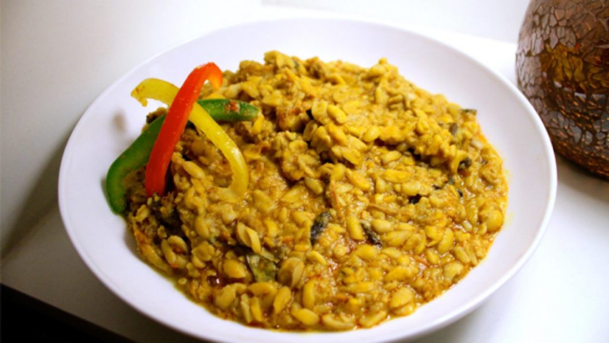

Ukwa

Description
Ukwa also known as bread fruit dish. Is a highly sort after season meal in South Eastern part of Nigeria. It's a higly proteinous meal with a unique taste that makes easy to be eaten seasoned or unseasoned.
Ingredient
- Ukwa (breadfruit)
- Akanwu (potash)
- Scotch bonnet
- Palm oil
- Onugbu (bitter leaf)
- Ogili isi
- Dry fish
- Goat meat
- Smoked fish
- Seasonsonig Cubes
Steps
- Put ukwa in a pot add enough water to reach about 3 inches above, and place over medium-high heat.
- Boil until the water turns milky.
- Swirl akanwu gently and add 3-4 tablespoons of the akanwu liquid, the cooking liquid will immediately turn pale yellow.
- Cover and continue cooking until the ukwa is soft.
- Place a sieve over a bowl and pour ukwa and cooking liquid into the sieve.
- Pour 1 cup ukwa cooking liquid back into the pot (if you don\’t have up to 1 cup ukwa cooking liquid, complete with water) and place over medium heat.
- Add salt, fresh pepper, palm oil, onugbu, ogili isi, seasoning cube and dry fish or cooked goat meat.
- Cook for about 5 minutes till dry fish has softened.
- Add ukwa stir well and cover.Cook until your breadfruit pottage is almost dry.
- Take off the heat. It will absorb the little water remaining, that way it won\’t end up dry.
- Your breadfruit pottage, ukwa etelu ete is ready to be served. Serve with the cooking liquid or use the cooking liquid to prepare Ukwa soup.